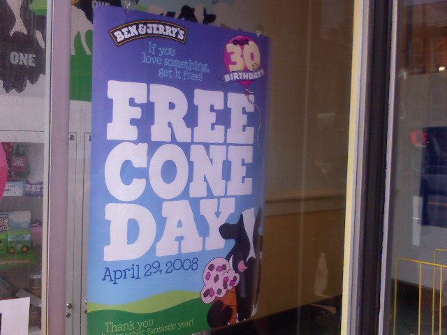
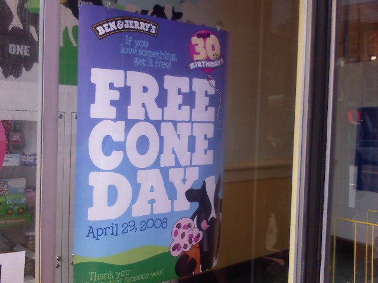
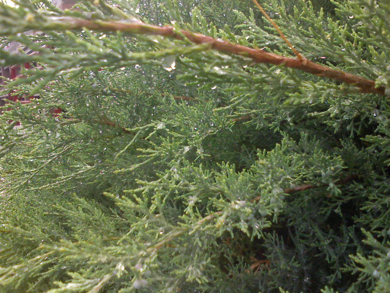
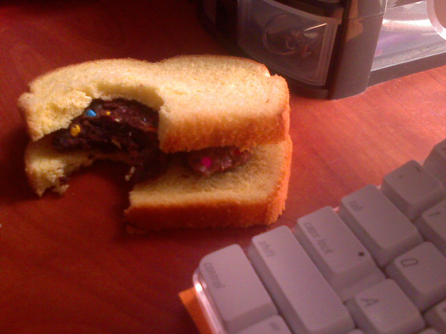
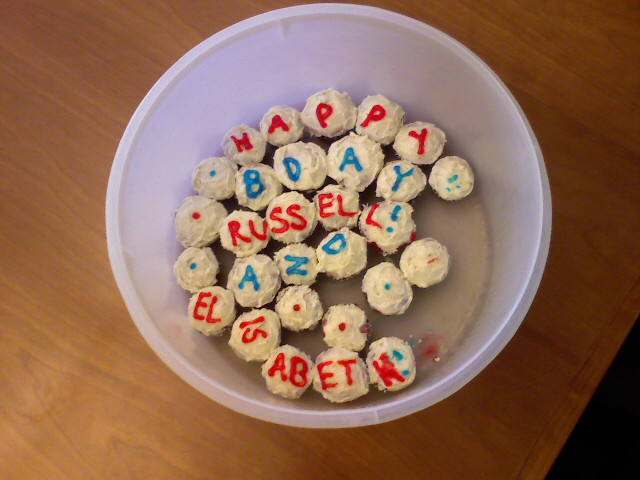

Free Cone Day At Ben And Jerrys

Ben and Jerry’s had their annual free cone day. The line went out the door and around the corner but it was totally worth it. I got plain chocolate.


Ben and Jerry’s had their annual free cone day. The line went out the door and around the corner but it was totally worth it. I got plain chocolate.
Kristina needed to make a movie for her Introductory Design class. Lucky for her she chose me as the star as my schedule just happened to be free! The movie also featured everyone’s favorite Puck the cat. I’m proud to be apart of one of the most suspenseful movies of the year. Check it out…
It took about a day to shoot all of the pictures and another full day of editing in Final Cut Express. Kristina scoured for sound effects and music in my impressive collection that I have built up over the years since I was in school. Hopefully she gets an “A” for her late night of editing, but if not, we still had fun making it even if it isn’t the most professional flick on the interwebs these days.

It was a drizzly morning on my walk to the Glenmont metro station. Wish I had my DSLR with my macro lens for this shot but my phone camera was all I had.

Confetti brownies between two slices of potato bread. Mmm mmm good!
Today is my 23rd birthday, but I’m not the only one who has a special day today. Did you know American Idol first season winner Kelly Clarkson‘s birthday is today? Or how about Chipper Jones, the 3rd baseman for the Atlanta Braves who was also born on this day? Apparently Benedikt Lechler, a famous composer, celebrates his 414th birthday today. He was born in 1594.
Thanks to BrainyHistory.com I know all of this random trivia about April 24th. But not just limiting themselves to birth dates, Brainy History also offers a catalog of death dates and important events. Estee Lauder died at the age of 97 on the same day I turned 17 in 2004. But my favorite event that happened on April 24th hands-down has got to be from 1982 when the IBM-PC was introduced. Those that know me realize this is a perfect fit for me.

But birthdays aren’t all about looking back and reflecting; they’re about getting free stuff on your special day. HeyItsFree.net (via Pammy) has the ultimate list of food, entertainment, and services that give away free offerings to birthday boys or girls. We’re talking mostly about free ice cream and cake but some places like Chevys mexican restaurants give away a free desert and a sombrero. The catch is you have to sign up in advance to take advantage of most of the offers. Too late for me now, but maybe next year.
Finally my Dad reminded me that when he was 23 he was in Vietnam in charge of 30 guys in a supply department on the USS Warrington. I sure am lucky I’m not off in a war zone and get to spend my birthday with family and friends.

Kristina made me brownies and got me grown presents like shoelaces, belts, and the movie 300 for my birthday.
for my birthday.

Blowing out candles is still fun no matter how old you are.
The sun was out and in full force this morning after several wet and rainy days earlier this week.
Today is my 23rd birthday. It also happens to be the 1 year anniversary of when I looked in my bathroom mirror and didn’t like what I saw. My belly finally crossed that point of seeming too big and it was time to make a change in my life. Before this epiphany I used to eat whatever I wanted without thinking about the consequences. Things like Chef Boyardee, fast food burgers, and pizza were common items on my menu.
Since then I decided to eat Cheerios in the morning and Healthy Choice dinners at night. I became aware of what I was eating and actively went out of my way to find healthier alternatives. Candy bars from the vending machine everyday quickly add up yet the snacks never seem to provide any satisfaction. It was better for me to avoid them all together.
I even tried to develop an exercise routine by riding my $7 exercise bike which became the topic of my first real blog entry here. I quickly lost interest in the bike and except for my 1.5 miles I cover walking to and from work, I don’t really have any other exercise plan. Relying on watching what I eat alone, I managed to o from a high of 217.4 to a jaw dropping 190.0 today! Check out the graph below:

I found keeping track of my weight every couple of days really helped keep me focused on my goals. If I began to gain a few pounds I knew I was slipping up and could easily correct myself. Mostly what kept me interested was seeing the patterns that would emerge. I love looking at numbers like my blog stats or my bank account so tracking my weight was fun. Online tools like SkinnyR and The Daily Plate make it a snap to keep an eye on your scale.
I hope to get down my normal weight of 185 pounds later this year. My weight loss has slowed some but it is still inching along ever so slowly. I think I need to buy new belts because there is still some slack when I set it to the smallest hole. I guess that this is just proof that tackling a goal a little bit at a time can yield big results over time.

This past weekend I had the great pleasure of attending the very first PodCamp DC. PodCamp is a new media unconference, meaning the participants decide the schedule of events and topics on the day of the conference rather than in advance. There was quite a diverse set of topics ranging from the nuts and bolts of podcasting in Podcasting 101 to an interactive discussion on the future of Social Media and New Journalism. The attendees were just as diverse as the topics from the young techies like myself all the way up to retired grandparents.
One thing that really surprised me was the number of senior citizens at the event. I saw a guy typing away on his Acer laptop running Ubuntu and another lady who looked to be a grandmother wearing a Red Hat Linux baseball cap. I thought the people that attended these things were mostly young computer nerds though I was pleasantly surprised to see people of all gender, color and creed.
running Ubuntu and another lady who looked to be a grandmother wearing a Red Hat Linux baseball cap. I thought the people that attended these things were mostly young computer nerds though I was pleasantly surprised to see people of all gender, color and creed.

Her Flip video camera (atleast that is what I think it is) matched her glasses.
Probably the most insightful talk of the conference was given by Gretchen Vogelzang of the MommyCast. She talked about how her and a friend turned a simple podcast about motherhood into a six-figure business attracting big name advertisers like Dixie, National Geographic, and Warner Independent films. Gretchen and Paige put a lot of research into their work and it shows with a loyal following that rivals that of a major media property.

Gretchen Vogelzang gave on of the best talks of the conference about how the MommyCast got where it is today.
Social Media and New Journalism was a great talk with old media veterans Jim Long (NBC News) and Andy Carvin (NPR) discussing how new media was shaking things up in the traditional news space. They covered the mass propagation of information via Twitter citing the recent Illinois earthquake which quickly spread around the Twitterverse before any traditional news team even had a clue about what was going on.
New tools like Qik let you stream live video over the Internet from your cell phone. While the quality is low there is the ability for people watching the stream to chat and send comments straight to the cell phone creating a new dynamic between producer and consumer. You can see their whole talk which as recorded using Qik below.
Another product mentioned called Utterz lets you call a phone number and leave a voicemail which will be converted and uploaded to the Internet and pushed out as a podcast. Interactive tools like Qik and Utterz make covering an event in near-realtime a possibility.

This dynamic duo talked about how New Media is disrupting journalism. They demoed Qik and Utterz and sparked lots of good ideas from the packed crowd. See the footage from their talk below.
When lots of geeks get together, a gadget meet-and-greet is sure to happen. I saw a Nokia N810 Internet tablet and Asus Eee PC
and Asus Eee PC . Both were small, portable devices for surfing the web in a Wifi-heavy area.
. Both were small, portable devices for surfing the web in a Wifi-heavy area.

Lots of gadget gawking going on at a geekfest like PodCampDC
The rest of the time was about meeting new people and trading ideas. I helped answer a few questions for a guy named Andrew who wanted to run a blog and video podcast all from his Blackberry. Using WordPress and Postie he can accomplish this as he travels around the country. Everyone seemed to be all abuzz about Twitter and I found a few more people to follow although it is getting harder and harder to keep up with all of my followers. I think I will be cutting back some.

There was so much discussion and exchange of ideas going on.
All in all, PodCamp DC was light on content but heavy on people. I heard a few complaints about the lack of technical podcasting instruction like the New Media Expo of late last year, but that’s what you get with a free, local conference. I know there will be a whole lot more presentations next year! I still had a great time hanging out with fellow web nerds.
You can see the rest of the photos from the day on my Flickr page. And if you want to see all of the pictures from the event just search for the tag ‘podcampdc‘
If you missed out on this unconference, there is the Social Dev Camp East coming up in 3 weeks. It is on May 10th, 2008, in Baltimore. I’ll be there and if you’ll be there do say hello.
Other PodCamp DC Recaps:

Today is the birthday of a co-worker of mine and when they called a fake meeting I was surprised to see it was for me! The cup cakes were red velvet with cream cheese frosting. Yum!